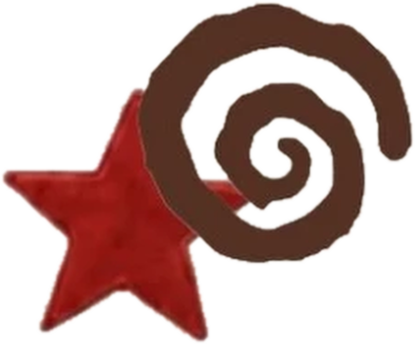

echosystemai


what it is
echosystem turns news about a company or topic into a knowledge graph and a short written report, then checks that report against the articles it came from.
how it works

collect
pulls recent articles on a topic and cleans them up

extract
finds the people, companies and relationships in each one
connect
stores them in a neo4j graph and qdrant vector search
draft
a researcher agent writes a report from what it retrieved
audit
an auditor checks the draft against its sources, with up to three tries
my favorite part
when two articles disagree, the graph doesn't pick a winner. it keeps both claims and links them as a contradiction, so the conflict stays visible.
the honest bit
it's a prototype. the auditor is a language model comparing text to text, so a pass means it found nothing wrong, not that the report is true. anything still unsupported after the last try gets flagged for a human.